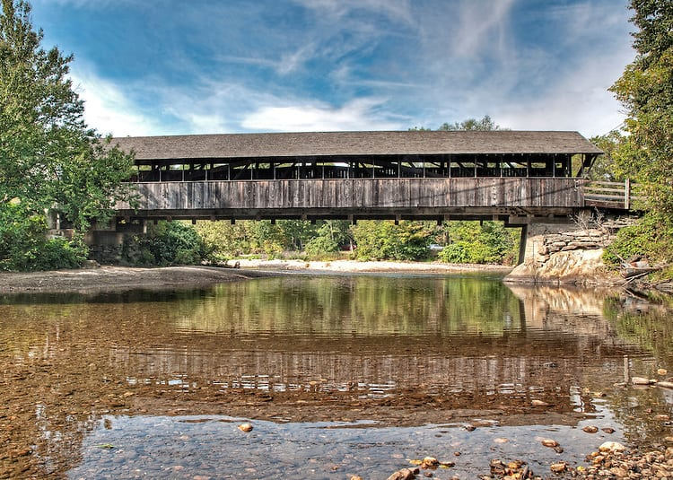

Martha’s Vineyard, MA
Charter boats, guest houses and seafood shacks. A summer rush that has to carry a quieter winter.
HIGH SEASONSummer
LOW SEASONWinter

Inspired by summers on Martha’s Vineyard
and winters in the Mad River Valley.
A purchase in October affects the cash you have in March. Compare the whole year before you commit.
Upcoming commitments included in the forecast. These are additional to recurring monthly costs.
Explicit dated commitments from the same example used in the V0 app. No connected account data.
Test a reduction in fuel and charter supplies. See its effect on the example’s Projected Low without changing the baseline.
The reduction is capped at each month’s fuel estimate and the first month is prorated. It is a scenario, not a recommendation that this cost can be cut.
Martha’s Vineyard and the Mad River Valley are the roots of Rivertide’s idea.
Charter boats, guest houses and seafood shacks. A summer rush that has to carry a quieter winter.
Ski shops, inns and sugarhouses. Winter brings visitors; mud season brings a different pace.
Look beyond the balance in your account. A purchase can fit today and leave a shortfall in the quiet months.
Example: a $15,000 cash purchase. No financing or trade-in.Before the purchase
Clear assumptions. Conservative estimates.
No reason to steer you toward a loan.
See what’s included, what is held back, and where an estimate comes from.
When the data is uncertain, protect the buffer. An optimistic estimate is not permission to spend.
Rivertide doesn’t profit from users needing a loan.
Your financial information serves your decisions, not an advertiser’s.
Rooted in two seasonal places
On Martha’s Vineyard, summer brings the rush. In the Mad River Valley, winter does. The seasons differ, but rent, insurance and equipment payments continue when business slows.
Rivertide starts with that practical question: what do the strong months need to carry? It gives a small business owner a way to look past today’s balance and plan for the quieter months, without a finance department.
The busy season should help pay for
the months that follow.